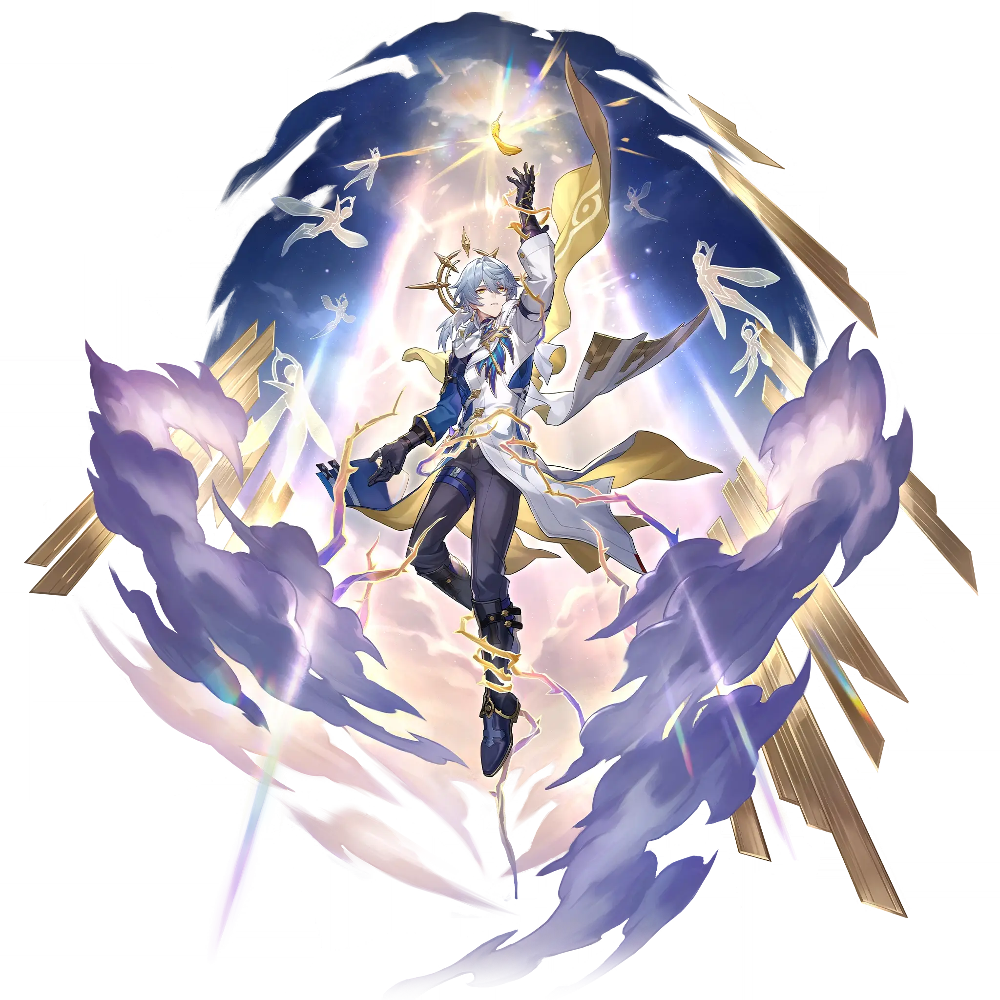

Sunday
Best Sunday build guide for Honkai Star Rail. See Sunday's best Relics, Light Cones, teams, Eidolons, Trace priority, and how to play Sunday.
🔍 Detail Skill
Semua skill aktif dan pasif beserta efeknya.
Deals Imaginary DMG equal to #1[i]% of Sunday's ATK to a single target enemy.
Enables one designated ally character and their summon to immediately take action, and increases their DMG dealt by #1[i]%. If the target has a summon, then the dealt DMG increase is further boosted by an additional #2[i]%, lasting for 2 turn(s). After using Skill on The Beatified, recovers 1 Skill Point. When Sunday uses this ability on characters following the Path of Harmony, cannot trigger the
When using Skill, increases the target's CRIT Rate by #1[i]%, lasting for 3 turn(s).
After this Technique is used, the first time Sunday uses an ability on an ally target in the next battle, the target's DMG dealt increases by 50%, lasting for 2 turn(s).
⚔ Light Cone Terbaik
Diurutkan dari yang paling kuat. Persentase menunjukkan performa relatif terhadap pilihan terbaik.
💎 Relic Set Terbaik
Set terbaik untuk karakter ini, diurutkan berdasarkan prioritas.
📊 Stat Utama
Stat yang dicari pada tiap slot.
👥 Tim yang Direkomendasikan
Karakter yang sering dipasangkan bersama Sunday.
 Jing Yuan
Jing Yuan
 Yunli
Yunli
 Phainon
Phainon
 Dan Heng • Permansor Terrae
Dan Heng • Permansor Terrae
 Himeko Nova
Himeko Nova
🔗 Lanjutkan
Build ini dirangkum dari Prydwen Institute. Starwise tidak menghitung sendiri. Angka bisa berubah setelah patch atau karakter baru rilis.